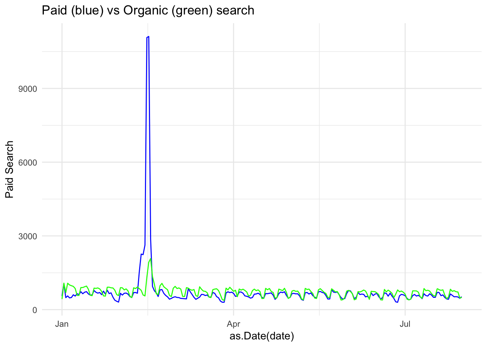

Correlation
Correlation is a number that describes how strong of a relationship there is between two variables.
In digital analytics terms, you can use it to explore relationships between web metrics to see if an influence can be inferred, but be careful to not hastily jump to conclusions that do not account for other factors.
For instance, a high correlation between social shares and SEO position could mean:
- Social shares influence SEO position
- SEO position influences social shares
- Social shares and SEO position are influenced by a third factor (such as Brand strength)
- The relationship was a chance error
It is, unfortunately, pretty common to see something like the first bullet used as the sole interpretation of a correlation, which is problematic for two reasons:
- There might be other factors in play (the other bullets in the list!)
- Correlation is not necessarily a sign of causation.
But, still, correlation can be very useful: identifying that a relationship exists can be a great place to start looking for the underlying drivers of that relationship which, ultimately, can lead to an insight than can drive an action!
Performing correlation analysis in R
The base function cor() will perform correlations on a data.frame. Let’s give this a go with some data. We’ve got two options here, so choose wisely, grasshopper! Option 1 is preferred, but Option 2 is a perfectly serviceable fallback.
Option 1: YOUR Data
To make this interesting, how about we use your data? If you have a Google account with access to Google Analytics, then follow the instructions to authenticate on the Analytics APIs page. Once you’ve done that, then the function below from the googleAnalyticsR package should give you the last 60 days of data for the viewID you enter:
start_date <- Sys.Date()-60
end_date <- Sys.Date()-1
web_data <- google_analytics_4([insert your view ID],
date_range = c(start_date,end_date),
metrics = c("sessions","pageviews","entrances","bounces"),
dimensions = c("date","channelGrouping","deviceCategory"),
anti_sample = TRUE)
head(web_data)Structurally, the output should look very similar to the table shown in Option 2 below (note that you didn’t have to remove the first column!).
Option 2: Sample Data
If you don’t have a Google Analytics account or are not able to access it, then you can use the sample data set already downloaded in earlier exercises:
## used for kable that makes nice RMarkdown tables
library(knitr)
web_data <- read.csv("./data/gadata_example_2.csv", stringsAsFactors = FALSE)
## get rid of first colum as it's just row numbers
web_data <- web_data[, -1]
kable(head(web_data))| date | channelGrouping | deviceCategory | sessions | pageviews | entrances | bounces |
|---|---|---|---|---|---|---|
| 2016-01-01 | (Other) | desktop | 19 | 23 | 19 | 15 |
| 2016-01-01 | (Other) | mobile | 112 | 162 | 112 | 82 |
| 2016-01-01 | (Other) | tablet | 24 | 41 | 24 | 19 |
| 2016-01-01 | Direct | desktop | 133 | 423 | 133 | 61 |
| 2016-01-01 | Direct | mobile | 345 | 878 | 344 | 172 |
| 2016-01-01 | Direct | tablet | 126 | 237 | 126 | 77 |
Quick Review: What all is going on with the simple code above?
web_datais an object (data frame) in this case that we’re creating- We’re using the
stringsAsFactorsparameter because…we usually just want to do that when reading in data. kable()is a function that is really just used here so that the data displays a little more cleanly on this page. If you’re trying this simply within RStudio…you can omit it.head()is a function that (by default) returns only the first six rows of the object.web_data[, -1]is “the data.” the-1is saying “don’t show the first column” (you could think of this asweb_data[,-1], too)
Got it? Good. Let’s continue with the lesson at hand!
Let’s correlate!
Correlations will only work with numeric data, so we subset to just those columns and then run the base R function cor() to see a correlation table:
web_data_metrics <- web_data[,c("sessions","pageviews","entrances","bounces")]
## see correlation between all metrics
kable(cor(web_data_metrics))| sessions | pageviews | entrances | bounces | |
|---|---|---|---|---|
| sessions | 1.0000000 | 0.8384321 | 0.9999923 | 0.9411201 |
| pageviews | 0.8384321 | 1.0000000 | 0.8377078 | 0.6364753 |
| entrances | 0.9999923 | 0.8377078 | 1.0000000 | 0.9416535 |
| bounces | 0.9411201 | 0.6364753 | 0.9416535 | 1.0000000 |
The table is mirrored in the diagonal and provides the correlation coefficient (aka, “r”) between each pair of values that intersect in the cell. 1 means a perfect correlation, 0 means no correlation and -1 means a perfect negative correlation.
Does the R that we’re working on learning today have anything to do with the correlation coefficient r? Well…no. Or, at least, only to the extent that you can use R-the-platform to calculate r-the-correlation-coefficient. Good question, though!
When working with correlations, its always a good idea to view an exploratory plot. A handy function for this is pairs() which creates a scatter plot of all the metrics passed in combination:
pairs(web_data_metrics)
Here you can see the correlation numbers in graphical form. For instance, the high correlation of 0.9999923 between sessions and entrances results in an almost perfect straight line. Since a session starts with an entrance, this makes perfect sense! A correlation of less than 1 may be a quick diagnostic that something is wrong with the tracking.
How do web channels correlate?
One useful piece of analysis is seeing how web channels possibly interact.
Data Prep
To get the data in the right format, the below code pivots via the reshape2 package:
## Use tidyverse to pivot the data
library(dplyr)
library(tidyr)
## Get only desktop rows, and the date, channelGrouping and sessions columns
pivoted <- web_data %>%
filter(deviceCategory == "desktop") %>%
select(date, channelGrouping, sessions) %>%
spread(channelGrouping, sessions)
## Get rid of any NA's and replace with 0
pivoted[is.na(pivoted)] <- 0
kable(head(pivoted))| date | (Other) | Direct | Display | Organic Search | Paid Search | Referral | Social | Video | |
|---|---|---|---|---|---|---|---|---|---|
| 2016-01-01 | 19 | 133 | 307 | 17 | 431 | 555 | 131 | 68 | 0 |
| 2016-01-02 | 156 | 1003 | 196 | 43 | 1077 | 1060 | 226 | 158 | 3 |
| 2016-01-03 | 35 | 1470 | 235 | 29 | 696 | 489 | 179 | 66 | 90 |
| 2016-01-04 | 31 | 1794 | 321 | 70 | 1075 | 558 | 235 | 46 | 898 |
| 2016-01-05 | 27 | 1899 | 309 | 74 | 1004 | 478 | 218 | 47 | 461 |
| 2016-01-06 | 21 | 1972 | 204 | 299 | 974 | 494 | 246 | 47 | 418 |
Take a minute to examine what the pivoted data looks like? Is it tidy data? Not exactly. But, that’s good! In one since, we’ve got separate “metrics” for each day now – the channelGrouping-sessions combination.
Examining the Data
We can plot and correlate all the metrics for an overview. Because we don’t want to do exactly the same thing as we did earlier (where’s the fun in that?!), let’s go ahead and round the correlation coefficients to two decimal places using the round() function. Other than that, we’ll do exactly what we already did when we were simply correlating the metrics in our data set:
## can't include the date as its not numeric, so remove
cor_data <- pivoted[, -1]
## not including first column, so -1 subset
cor_table <- round(cor(cor_data),2)
kable(cor_table)| (Other) | Direct | Display | Organic Search | Paid Search | Referral | Social | Video | ||
|---|---|---|---|---|---|---|---|---|---|
| (Other) | 1.00 | 0.13 | 0.12 | 0.09 | 0.17 | 0.03 | -0.04 | 0.46 | 0.37 |
| Direct | 0.13 | 1.00 | 0.04 | 0.07 | 0.22 | -0.02 | 0.09 | -0.05 | 0.01 |
| Display | 0.12 | 0.04 | 1.00 | 0.01 | -0.05 | 0.05 | -0.10 | 0.19 | 0.27 |
| 0.09 | 0.07 | 0.01 | 1.00 | 0.26 | 0.03 | 0.13 | 0.03 | 0.13 | |
| Organic Search | 0.17 | 0.22 | -0.05 | 0.26 | 1.00 | 0.51 | 0.19 | -0.04 | 0.08 |
| Paid Search | 0.03 | -0.02 | 0.05 | 0.03 | 0.51 | 1.00 | 0.08 | -0.01 | 0.22 |
| Referral | -0.04 | 0.09 | -0.10 | 0.13 | 0.19 | 0.08 | 1.00 | -0.11 | -0.25 |
| Social | 0.46 | -0.05 | 0.19 | 0.03 | -0.04 | -0.01 | -0.11 | 1.00 | 0.50 |
| Video | 0.37 | 0.01 | 0.27 | 0.13 | 0.08 | 0.22 | -0.25 | 0.50 | 1.00 |
pairs(cor_data)
Analysis
Now, when we compare channels, we see much looser correlations for this dataset, which makes sense, right? Correlations under 0.3 are, as a rule-of-thumb, not worth considering, so the standouts look to be Social vs. Video* and Paid** vs. Organic Search.
Plotting those channels, we can examine the trends to see the shape of the data
Correlation has help us zero in on possibly interesting relationships
library(ggplot2)
gg <- ggplot(data = pivoted) +
theme_minimal() +
ggtitle("Paid (blue) vs Organic (green) search")
gg <- gg +
geom_line(aes(x = as.Date(date), y = `Paid Search`), col = "blue")
gg + geom_line(aes(x = as.Date(date), y = `Organic Search`), col = "green")We can see here the trends do look similar, but with a paid search peak in the first quarter (as we look at this, we might want to consider these spikes as outliers – either simply by the visual or using a more defined method for detecting outliers; it would be quite simple to remove this data from the data set and run the analysis again…but we’re not going to go down that particular rabbit hole right now).
library(ggplot2)
gg <- ggplot(data = pivoted) +
theme_minimal() +
ggtitle("Social (red) vs Video (orange)")
gg <- gg +
geom_line(aes(x = as.Date(date), y = Social), col = "red")
gg + geom_line(aes(x = as.Date(date), y = Video), col = "orange")
Here, a peak in Social late in the year looks to have coincided with a peak in Video: possibly a campaign driving video views?
Cross correlation
The correlations, above all, compare the same date point, but what if you expect a lagged effect? Perhaps the video traffic drove social traffic later on due to client advocacy?
Cross correlations are useful when dealing with time-series data and can examine if a metric has an influence on itself or another after some time has passed.
This can be a powerful way to find if, say, a TV or Display campaign increased SEO traffic over the course of the few weeks following the campaign.
The below compares paid search on SEO using the ccf() function. The result is the correlation for different lags of days. We can see a correlation at 0 lag at around 0.5, but the correlation increases if you lag the Social trend up to 10 days before.
ccf(pivoted$Social, pivoted$Video)
You could then conclude that Video was having a lagged effect on Social traffic up to 10 days beforehand. But, beware! The nature of cross-correlation is that if both datasets have a similar looking spike, cross-correlation will highlight it. Careful examination of the raw data trends should be performed to verify it. In some cases a smoother line will help get rid of spikes that affect the data (e.g., do the analysis on weekly or monthly data instead of daily). And, of course, there is no substitue for rational thought: if you find a relationship like this, can you explain it rationally? And, if so, can you conduct further analysis to validate that rationalization? (If only R had an Easy Button to do the actual thinking, too. Alas!)